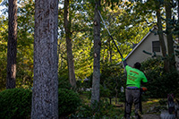
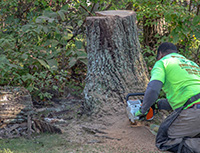
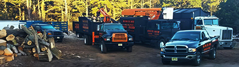

When it comes to maintaining the trees on your property, deciding between tree trimming and tree removal is a challenge. Both options serve different purposes and have a significant impact on the health and appearance of your landscape. As a trusted tree company in Smithville, we often help homeowners navigate these decisions based on the condition of their trees, safety concerns, and property aesthetics. Tree trimming is a great way to encourage healthy growth, remove dead or diseased branches, and enhance the overall look of your trees. However, when trees become hazardous, severely damaged, or diseased beyond saving, removal may be the best option to protect your home and property. Understanding when to trim versus when to remove can save you time, money, and headaches. In this blog, we’ll explore the key differences between tree trimming and removal and provide expert advice on making the right choice for your property.
When Tree Trimming is the Right Choice

Tree trimming is often the preferred choice when a tree is healthy but requires some maintenance to promote growth and safety. Regular trimming helps remove dead or diseased branches that could pose a risk during storms or high winds. It also improves sunlight exposure and air circulation within the tree, which can encourage stronger growth and a fuller canopy. In addition to health benefits, trimming can enhance the aesthetic appeal of your landscape, keeping trees shaped and well-maintained. However, it’s essential to trim at the right time of year and in the correct way to avoid stressing the tree. Our team follows the best practices to ensure that trimming is done safely and effectively, preserving the vitality of your trees while improving the overall look of your property. But what happens when trimming isn’t enough? That’s when tree removal might come into play.We Preform Tree Removal in Smithville When it’s Necessary

Tree removal becomes the best option when a tree poses a threat to safety, is beyond saving, or negatively impacts the property. In cases where a tree is severely diseased, infested with pests, or structurally compromised from storm damage, removal may be the only way to prevent accidents or further property damage. Dead or dying trees are also at risk of falling, especially during storms, and can pose a danger to nearby structures or power lines. Additionally, if a tree’s roots are causing damage to foundations, sidewalks, or underground utilities, removing the tree can prevent costly repairs in the future. Sometimes, removal is necessary when a tree is growing too close to a home or other structures, obstructing views, or interfering with landscaping plans. Our Smithville tree experts assess each situation carefully to determine whether removal is necessary to maintain the safety and beauty of your property.
A Professional Tree Company in Smithville Helps You Decide
Before making a decision between tree trimming and removal, it’s crucial to consult with a professional to properly evaluate the situation. Every tree is different, and what might seem like a small issue could indicate deeper problems that require expert attention. A professional tree expert can assess the health and structural integrity of your trees, considering factors like age, disease, infestation, and root damage. They will also take into account the proximity of the tree to buildings, power lines, and other landscape features. In many cases, trimming may resolve the issue and prolong the life of the tree. However, if the tree presents a safety hazard or is causing significant disruption to your property, removal may be the safest and most effective solution. An experienced tree company can guide you through the process and ensure that the right action is taken for the well-being of your property and the tree.
Contact Us if You Need a Tree Company in Smithville
Deciding between tree trimming and removal can be difficult, but with the guidance of a trusted tree company in Smithville, you can make the best choice for your property. Whether it’s maintaining the health and beauty of your trees through expert trimming or ensuring the safety of your home with necessary tree removal, our team is here to help. We are committed to providing professional, reliable service that prioritizes both your safety and the longevity of your landscape. If you’re unsure about the condition of your trees or need assistance in determining the right approach, contact us today for a thorough assessment. Your trees deserve the best care, and our Smithville experts are ready to ensure they thrive for years to come.
